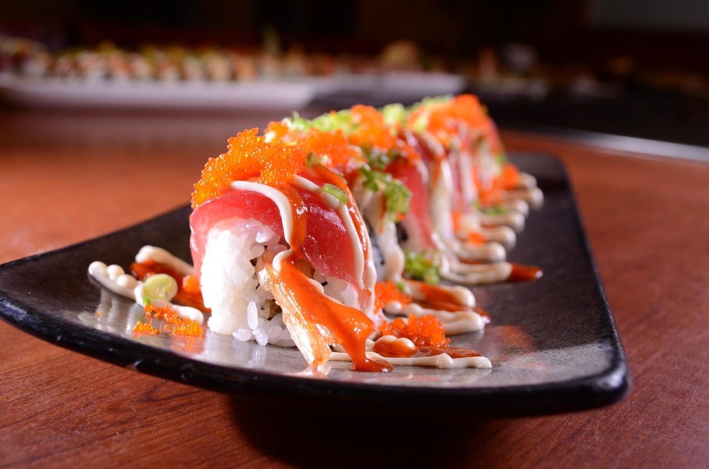

Sushi Recipe

Description
Sushi is a beautifully balanced Japanese dish that combines vinegared rice with fresh, flavorful ingredients like seafood, vegetables, and seaweed. This version focuses on maki rolls, where rice and fillings are rolled in sheets of nori (seaweed) and sliced into bite-sized pieces. The result is a visually appealing, customizable dish that’s both light and satisfying. With its clean flavors and delicate texture, sushi is as much about the experience of preparation as it is about taste.
Making sushi at home is easier than it seems—especially when using cooked fillings like crab, shrimp, or vegetables. Once the rice is properly seasoned and cooled, the rolling process becomes a fun and creative activity. You can keep it traditional or experiment with ingredients like cream cheese, mango, or spicy mayo. Whether served as an elegant appetizer or the main event, homemade sushi is a fresh, interactive meal that brings restaurant-quality results to your own kitchen.
Ingredients
- For the Sushi Rice
- 1.5 cups sushi rice
- 2 cups water
- 3 tbsp rice vinegar
- 1.5 tbsp sugar
- 1 tsp salt
- Fillings (choose 2-3)
- 1 sliced avocado
- 1 julienned cucumber
- 1-2 imitation crab sticks or real cooked crab
- Smoked salmon or sashimi-grade raw tuna/salmon
- Cooked shrimp or tempura shrimp
- Cream cheese
- Carrot, manog, or pickled radish
- Other
- 4-5 sheets of nori (seaweed)
- Soy sauce (for dipping)
- Pickled ginger
- Wasabi
- Bamboo sushi rolling mat
Steps
- Cook the Sushi Rice
- Rinse the rice under cold water until it runs clear.
- Cook with water until done. Let rest for 10 minutes.
- In a small saucepan, gently heat vinegar, sugar, and salt until dissolved.
- Gently fold the mixture into the warm rice using a wooden spoon or rice paddle.
- Let the rice cool to room temperature (spread it out to speed up cooling).
- Prepare Fillings
- Slice all fillings into long, thin strips.
- Set up a clearn workspace with your rolling mat, a bowl of water (to wet your fingers), and all ingredients.
- Assemble the Sushi Rolls
- Place a sheet of nori shiny-side down on the bamboo mat.
- With wet fingers, spread a thin layer of rice over the nori, leaving about 1 inch at the top bare.
- Lay your fillings horizontally across the middle of the rice.
- Roll the sushi tightly using the mat, pressing gently as you go. Seal the edge with a bit of water.
- Slice the Rolls
- Using a very sharp knife, slice each roll into 6-8 pieces.
- Clean the knife between cuts to prevent sticking.
- Serve
- Arrange on a plate with soy sauce, pickled ginger, and wasabi.
Home